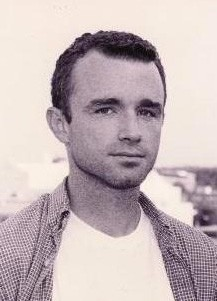

|
 Michael Hoermanís poems have appeared in Potomac Review, Chiron Review and in a chapbook, Bad Rotten, from Pudding House Publications. Website: www.badrotten.com. He was a featured reader in the Poetry in the Chapel series at Forest Hills Cemetery in Jamaica Plain, Mass., and at a gathering of Southern writers sponsored by the University of Alabamaís Modern and Contemporary Poetics series. Hoerman was a member of the first Arkansas and Missouri teams to participate in the National Poetry Slam.
|